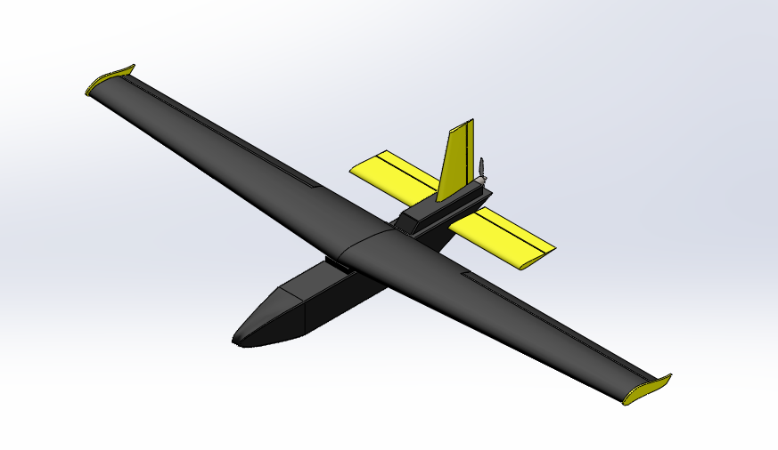

Project Overview
This summer, while working at CICATA, I was tasked with desiging a flight program to train people on the Bormatec MAJA, a long-range UAV designed to hold large payloads for aerial surveillance. In addition to desiging checklists and flight logs, I created a model of the drone for use in PhoenixRC, a now-defunct flight simulator that the program had readily available.
While a more detailed description of the process I used is available in Gist format here, below is a brief overview of what I accomplished over the course of a couple of weeks over the summer. I went from only baseline modeling experience to relative proficiency, producing a model that is similar in appearance and functionality to the Bormatec MAJA.
Here is the Blender Mesh, and here is the SolidWorks Assembly, both available for download.
Modeling
The first thing I had to do was create the model of the MAJA. I opted to use a mixture of Solidworks and Blender, both programs with which I was relatively unexperienced. I was successfully able to model the wings, propeller, vertical & horizontal stabilizers, body, and their respective control surfaces in Solidworks; at this point, I put my model into Blender to create meshes that PhoenixBuilder would understand.
{kind=link}


Perhaps unsurprisingly, I ran into lots of scaling issues, and I ended up with an untextured model in PhoenixBuilder, but that actually works pretty well as the model is to be used for long-distance training, so the texture doesn't matter too much.
Tuning & Flying in PhoenixRC
The next thing I had to do was get my model into PhoenixRC. PhoenixRC has an additional tool called PhoenixBuilder, which allows you to import meshes of custom models and add common characteristics like airfoils, control surfaces, powerplants, and collision meshes to the model. Because I'd spent so much time getting the scale correct in Blender, this was a relatively painless process, and I was able to get my completed model from Blender to Phoenix in a matter of hours.

The rest of the battle came down to tuning; even though I had done a decent job scaling the aircraft, I needed to fiddle with the center of gravity, thrust provided by the motor, and lift the aircraft was generating. At the end of this project, we ended up with a really fantastic training tool to get new pilots comfortable with the dynamics of an airframe similar to what they'll actually be flying. I became more proficient in Solidworks, got to see simulated instability, and was able to see a project through to completion.